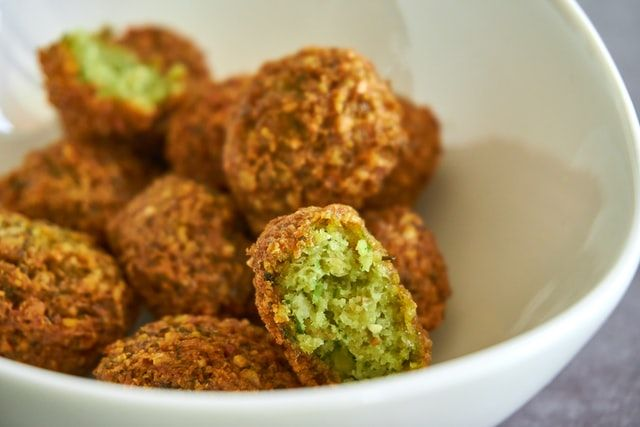

Falafels
Préparation: 40 minutes
Cuisson: 15 minutes
Ingrédients
-
443 mL de pois chiches cuits

-
0.5 oignon
-
3 gousse d'ail
-
0.33 t de coriandre
-
0.33 t de persil
-
2 c. à table de graines de sésame
-
0.5 c. à thé de sel
-
0.5 c. à thé de poivre
-
0.25 c. à thé de coriandre en poudre
-
1 c. à thé de cumin
-
2 c. à table de farine tout usage
-
4 c. à table de huile d'olive